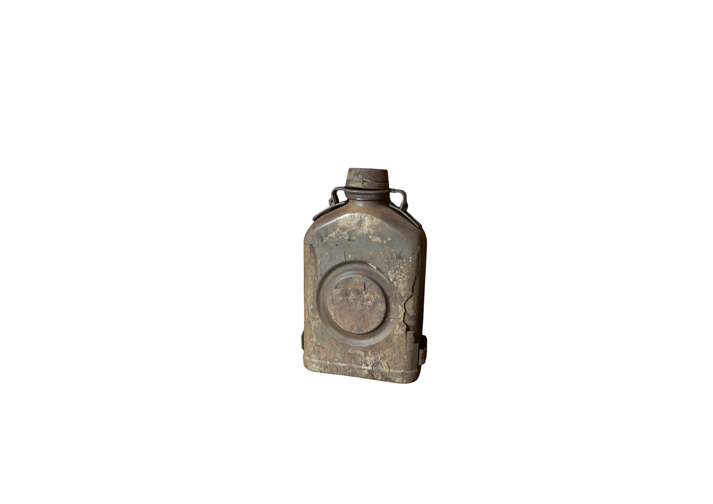
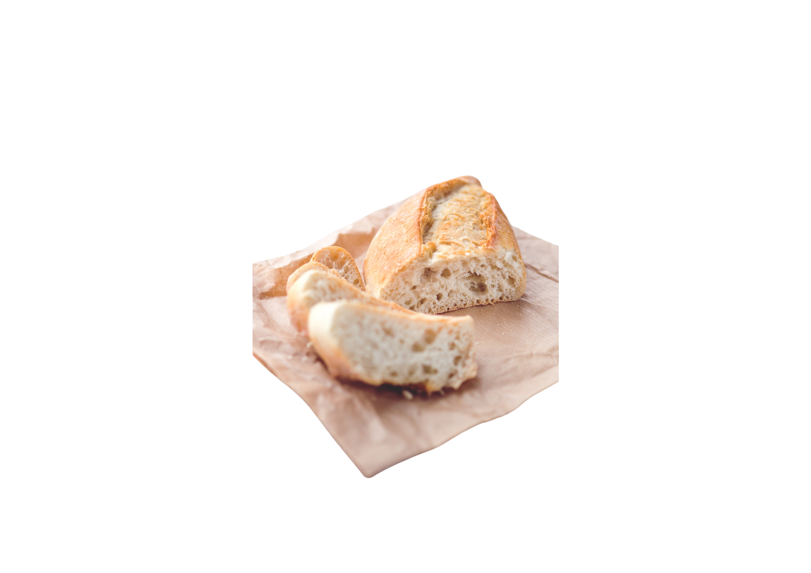
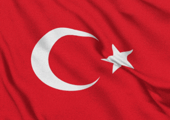

Vatan uğruna can verenlerin geride bıraktığı gerçek satırlara yolculuk yap.
Çanakkale siperlerine gizlenmiş üç emaneti bul ve şehitlerimizin mektuplarını dinle.



Bize bu vatanı bırakan aziz şehitlerimizi minnetle anıyoruz.